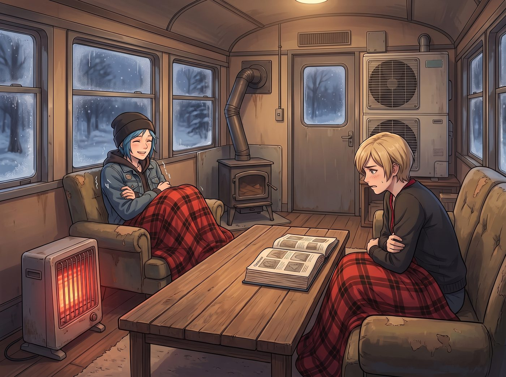
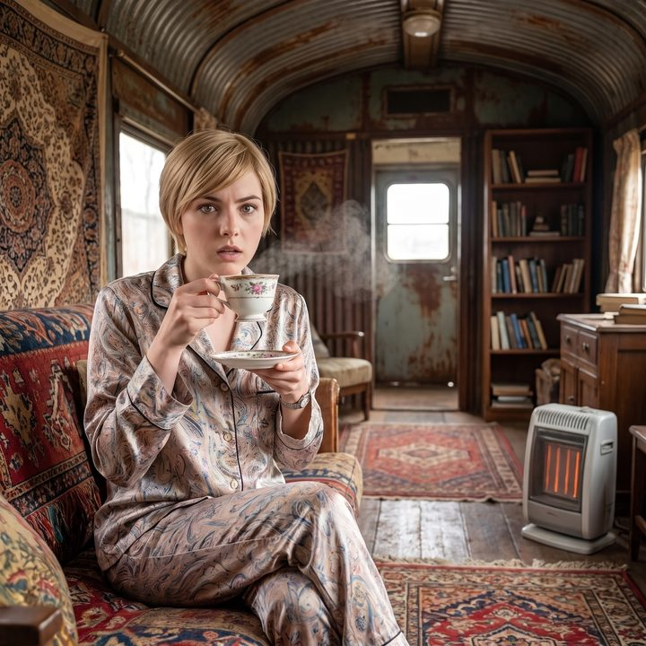

高茶與低茶


降溫來得比天氣預報說的還快。
那天，中節車廂那台熱泵空調剛好在等技師上山補冷媒；而 Chloe 又偏偏在前一天，把燒柴爐的排煙管拆下來保養，螺絲還沒鎖回去。整節車廂裡，只剩一台醜得要命的二手電暖爐，在角落裡苟延殘喘。
Victoria 的處境更尷尬。前一天，她才剛捧著一本連 Google 都搜不到的蘇格蘭工坊布料目錄，坐在那張回收木板拼成的長桌前，給 Chloe 上了一堂「真正的老錢不需要讓人知道」的課。結果那間兩百年的工坊回信說，她訂的手工大衣要等到明年春天才能交貨。
於是這天晚上，全車廂最溫暖的人，是裹著一條沃爾瑪十九塊九美金法蘭絨毛毯的 Chloe。
「所以我就不懂了，」Chloe 把那條十九塊九美金的沃爾瑪法蘭絨毛毯裹得更緊了一些，像一隻在沙發上築巢的藍色大鳥，挑釁地看著對面冷得微微發抖的 Victoria，「英國佬不是最愛面子嗎？就像歷史上的梅毒，法國人叫它義大利病、義大利人叫它法國病，歐洲各國都互相用對方的國家來命名甩鍋。他們怎麼會眼睜睜看著『法蘭絨（Flannel）』這個聽起來挺優雅的詞，跟北美伐木工和這種會起靜電的廉價化學纖維畫上等號？」
Victoria 坐在單人沙發上，即使只穿著單薄的真絲睡衣，脊背依然挺得筆直。她等著這個扳回一城的機會已經一整個晚上了。
「因為那根本不是一回事，Chloe。」Victoria 露出了一個充滿階級憐憫的冷笑，她那屬於頂級精英的知識儲備終於找到了發揮的舞台，「真正的法蘭絨起源於十七世紀的威爾斯，是用純粗梳羊毛織成的，為了抵禦大不列顛濕冷的妖風。英國人沒有甩鍋，是你們偉大的美國工業化和消費主義，把這個詞給『偷』了。妳身上裹著的那條十九塊九的破布，標籤上絕對寫著 100% 聚酯纖維（Polyester）。妳買的不是法蘭絨，妳買的是一塊極度易燃的石化塑膠垃圾。」
Chloe 愣了一下，低頭看了一眼毛毯邊緣洗得發白的洗標，上面確實印著「100% Polyester」。
「那又怎樣？」Chloe 撇了撇嘴，嘴硬地反擊，「至少這塊塑膠垃圾現在讓我熱得快要流汗了，而我們尊貴的 Chase 大小姐還在等她那件明年春天才能交貨的蘇格蘭羊毛。老錢（Old Money）的品味或許很高尚，但保暖效率顯然不如沃爾瑪。」
「這就是為什麼暴發戶和勞工階級永遠只能被表象欺騙。」Victoria 優雅地交疊起雙腿，決定徹底在認知層面上碾壓對方，「你們不僅對布料一無所知，甚至連現代企業用來廉價收買你們的手段都沾沾自喜。比如，妳剛才提到的所謂『高級品味』——妳覺得什麼是高級的下午茶？是那些五星級酒店和矽谷科技公司喜歡標榜的『High Tea』嗎？」
正端著一盤剛烤好的司康餅從廚房走出來的 Kate 停下了腳步，饒有興味地聽著這場階級知識科普。
「不然呢？」Chloe 皺起眉頭，「『High』不就是高級的意思嗎？放在高高的架子上，吃一堆甜得要死的小蛋糕。」
Victoria 忍不住翻了個完美的白眼，彷彿聽到了什麼極度褻瀆的言論。
「『High Tea（高茶）』是工業革命時期英國底層工人的晚餐。」Victoria 的語氣裡帶著一種對歷史文盲的痛心疾首，「工人們在工廠裡做了一天苦力，晚上六點回到家，餓得像狼一樣。他們會坐在高高的餐桌（High Table）旁，吃著廉價的肉排、馬鈴薯和重口味的濃茶來填飽肚子。這就是『High Tea』的由來——它代表著高強度勞動後的碳水化合物狂歡。」
她停頓了一下，接過 Kate 遞來的一杯大吉嶺紅茶，姿態優雅地用小湯匙攪拌著。
「而真正的貴族和老錢，晚餐通常在晚上八點甚至更晚才開始。為了填補下午的飢餓感，公爵夫人們會在下午四點左右，坐在起居室低矮舒適的沙發（Low Chair）上，喝點清淡的茶，吃幾片薄薄的黃瓜三明治。」Victoria 抬起下巴，給出了致命一擊，「這叫『Low Tea（低茶）』，或者直接叫 Afternoon Tea。所以，當現代的 HR 部門或那些自以為是的商務酒店，用『High Tea』來標榜他們的高級社交活動時，在真正的老錢眼裡，那就像是看著一群穿著西裝的猴子，在炫耀自己正在吃勞工的加班飯。」
車廂裡安靜了幾秒鐘。
坐在工作站前的 Lily 推了推圓框眼鏡，螢幕上閃爍著她剛調出來的企業稅務法規。
「Victoria 學姐的歷史考證完全正確。」Lily 用那種毫無起伏的語氣補充道，「從現代企業行政管理的角度來看，矽谷公司熱衷於舉辦名為『High Tea』的下午茶活動，本質上是一種極具成本效益的『情緒安撫支出』。他們用人均不到十五美元的廉價糖分和碳水化合物，換取員工在六點之後繼續留在辦公桌前無償加班的心理錯覺。這在財務報表上可以列為員工福利抵稅，同時又完美掩蓋了壓榨剩餘價值的本質。」
「靠。」Chloe 瞪大了眼睛，看著手裡的半罐啤酒，「所以這幫資本家不僅偷了法蘭絨的名字，還把窮人的晚餐包裝成高級貨來騙窮人加班？」
「這就是世界的運作邏輯，Chloe。」Victoria 輕輕抿了一口茶，終於找回了她作為資本階級繼承人的絕對主場與從容。
Max 坐在沙發的另一頭，看著這幅奇妙的畫面：Victoria 穿著單薄的絲綢睡衣，一邊在寒氣中微微發抖，一邊發表著無懈可擊的老錢階級演說；而 Chloe 雖然在知識上被徹底降維打擊，但依然舒舒服服地裹在那條十九塊九的「易燃塑膠」裡，是全車廂最溫暖的人。
「這節課非常精彩，Victoria。」Max 舉起寶麗來相機，將鏡頭對準了正在優雅品茶的 Victoria，「但作為一個來自西雅圖的普通人，我必須提醒妳，低矮沙發（Low Chair）上的貴族，現在可能需要吃兩塊勞工階級的司康餅來補充熱量，否則妳會在妳那高貴的階級認知裡凍感冒的。」
「咔嚓。」
伴隨著閃光燈，Victoria 瞪著相機的錯愕表情被定格在底片上。Kate 溫柔地笑著，把那盤熱騰騰的司康餅推到了 Victoria 面前。在這節遠離名利場的二號車廂裡，無論是蘇格蘭的無名羊絨，還是分辨 High Tea 與 Low Tea 的老錢品味，最終都敵不過冷夜裡一塊剛出爐的烤餅，以及同伴之間最平凡的相互調侃。